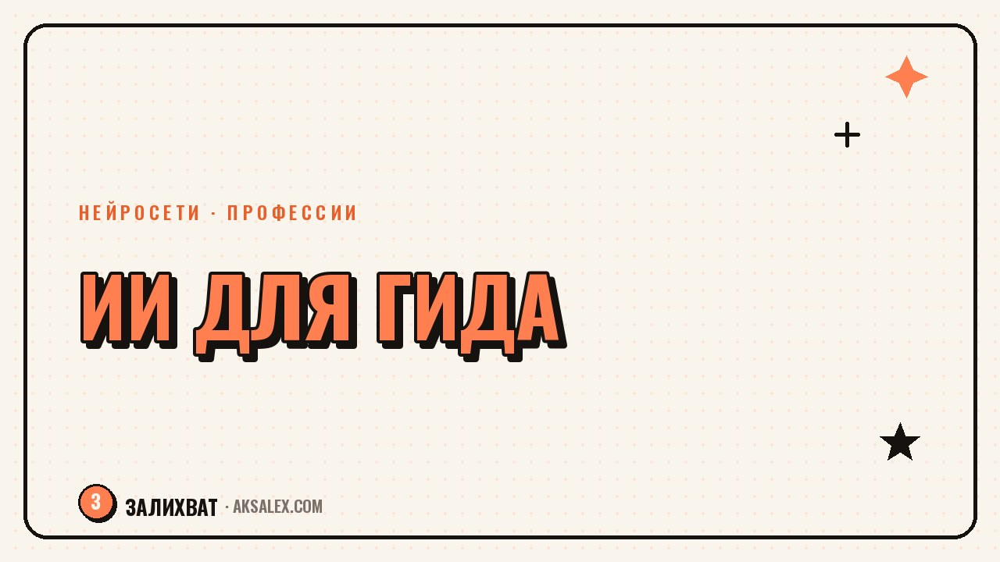

Нейросети для гида-экскурсовода: маршруты и тексты

Работа гида-экскурсовода выглядит как разговор с группой на свежем воздухе, но за каждой хорошей экскурсией стоят часы подготовки: сбор фактов, выстраивание маршрута, написание текста, который звучит живо, а не как лекция. Нейросети не заменят твой голос и харизму на площадке, но заметно сокращают время на черновую работу - от структуры маршрута до постов в соцсетях, которыми ты привлекаешь новых туристов.
Как нейросеть помогает собрать маршрут
Когда берёшься за новую тему или город, самое долгое - собрать и отсортировать факты так, чтобы из них получился логичный маршрут. Нейросеть помогает на этом этапе как черновой помощник: ты описываешь город, район или тему экскурсии, список точек, которые хочешь включить, и примерное время на прогулку, а в ответ получаешь рабочий вариант порядка точек с логичными переходами между ними.
Важно помнить: нейросеть не знает актуальной обстановки на местности - закрытых дворов, ремонта на улице, изменившегося режима работы музея. Маршрут из чата всегда нужно пройти ногами самому, прежде чем вести по нему группу. Зато на стадии черновика это экономит часы, которые раньше уходили на то, чтобы прикинуть логику маршрута на бумаге.
Что удобно просить у нейросети на этапе планирования
- Логичный порядок точек маршрута с учётом расстояний между ними
- Варианты, как связать несвязанные на первый взгляд объекты общей темой
- Запасные точки для группы, если основной маршрут перекрыт
- Расчёт тайминга: сколько минут на какую точку закладывать
- Идеи для коротких и длинных версий одной и той же экскурсии
Тексты экскурсий: как не писать сухую лекцию
Главная ошибка начинающего гида - писать текст экскурсии как доклад для учебника: даты, факты, цифры подряд. Группа устаёт от такого текста за первые десять минут. Нейросеть помогает переписать сухой факт в живую историю: ты даёшь ей исходные данные (дата постройки, архитектор, легенда), а просишь оформить это как короткий рассказ с интригой или конкретным образом, который запомнится.
Хороший приём - просить несколько вариантов подачи одного и того же факта: один серьёзный, один с юмором, один через личную историю человека, связанного с местом. Дальше ты выбираешь то, что ближе к твоей манере речи, и дорабатываешь своими словами. Текст нейросети - это заготовка, а не готовая реплика для площадки, потому что живой голос гида звучит убедительнее любого отполированного текста.
Я вела экскурсии по купеческому району пять лет и знала факты наизусть, но тексты звучали одинаково сухо. Нейросеть помогла переписать три ключевых истории через конкретных людей - купца, его дочь, их соседа. Группа стала запоминать имена и задавать вопросы, а не только фотографировать фасады.
Разные форматы экскурсий под разную аудиторию
Одна и та же тема звучит по-разному для семьи с детьми, для группы иностранных туристов и для взрослых, которые пришли за атмосферой и историей. Нейросеть помогает быстро адаптировать базовый текст под аудиторию: для детей - больше вопросов и игровых элементов, для взрослой группы - больше деталей и контекста, для иностранцев - простые формулировки и пояснения культурных особенностей, которые своим и так понятны.
Отдельно удобно использовать нейросеть для перевода текста - не только дословного, а с пояснением культурного контекста. Это особенно ценно для гидов-фрилансеров, которые работают с разными национальными группами без штата переводчиков.
| Аудитория | Что меняется в тексте |
|---|---|
| Семьи с детьми | Короче блоки, больше вопросов и игр |
| Иностранные туристы | Простые формулировки, культурный контекст |
| Взрослые ценители истории | Больше деталей, цитат, источников |
| Корпоративные группы | Акцент на тайминге и логистике |
Продвижение: как гиду вести соцсети без лишних часов
Большинство туристов сегодня находят гида через соцсети, а не через турагентство, поэтому страница в Instagram, VK или Telegram стала обязательной частью работы. Но писать посты после целого дня на ногах тяжело - и здесь нейросеть снимает львиную долю рутины: составляет контент-план на неделю, помогает превратить рассказанную на экскурсии историю в текст поста и подбирает подписи к фото.
Полезно попросить нейросеть собрать идеи постов из того, что у тебя уже есть: отзывы туристов, забавные вопросы с экскурсий, фото редких деталей маршрута. Такой контент выглядит живым и личным, а не рекламным - именно это чаще всего привлекает новых людей, особенно в небольших городах.
Что можно доверить нейросети в продвижении
- Контент-план на месяц с темами под сезон и праздники
- Переписывание рассказанной истории в формат поста
- Подписи и описания к фото с экскурсий
- Ответы на частые вопросы в директе (черновик, который ты дорабатываешь)
- Текст для визитки или мини-сайта с описанием твоих экскурсий
Где нейросеть не заменит гида
Нейросеть не стоит на площадке рядом с группой, не чувствует, что людям стало скучно, и не умеет на ходу поменять тон, если в группе оказались дети или люди, плохо знающие язык. Живая реакция на аудиторию - главный навык гида, и его не автоматизировать.
Также не стоит доверять нейросети исторические факты без проверки: она может перепутать дату, имя или событие. Любой факт перед группой нужно проверить хотя бы по одному надёжному источнику - книге, музейному каталогу, архивной справке.
Частые вопросы
Может ли нейросеть написать текст экскурсии целиком
Она может написать черновой вариант, но итоговый текст всегда нужно проверить на фактическую точность и доработать под собственную манеру речи. Живой голос и реакция на аудиторию остаются только за гидом.
Какие нейросети подходят для составления маршрутов экскурсий
Подойдёт любая текстовая нейросеть общего назначения - она поможет выстроить логичный порядок точек и рассчитать тайминг. Для проверки расстояний и актуальности мест дополнительно используют карты и личный осмотр территории.
Как нейросеть помогает гиду вести соцсети
Она составляет контент-план, превращает рассказанные на экскурсии истории в посты и подбирает подписи к фотографиям. Это экономит время на рутину, но личные ответы туристам в директе лучше оставлять себе.
Можно ли доверять фактам, которые выдаёт нейросеть про исторические места
Нет, факты нужно обязательно проверять по надёжным источникам: книгам, музейным материалам, архивным справкам. Нейросеть может ошибиться в дате, имени или деталях события, особенно по малоизвестным местам.
Поможет ли нейросеть адаптировать экскурсию для иностранных туристов
Да, она помогает не только перевести текст, но и объяснить культурный контекст, который непонятен человеку из другой страны. Это особенно удобно гидам-фрилансерам, которые работают с разными национальными группами самостоятельно.
Раз тема оказалась полезной, вот что почитать следующим. Разбираем, как устроен вечнозелёный контент для блога: какие темы работают годами и как собрать такие статьи с помощью нейросетей.
Читать статью →а не вручную